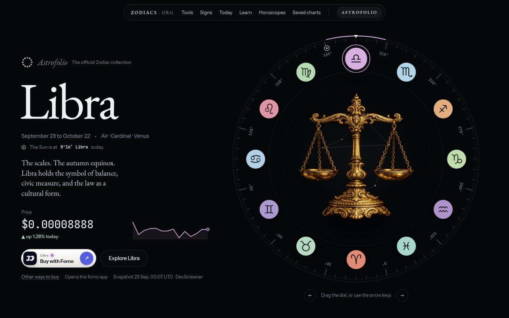
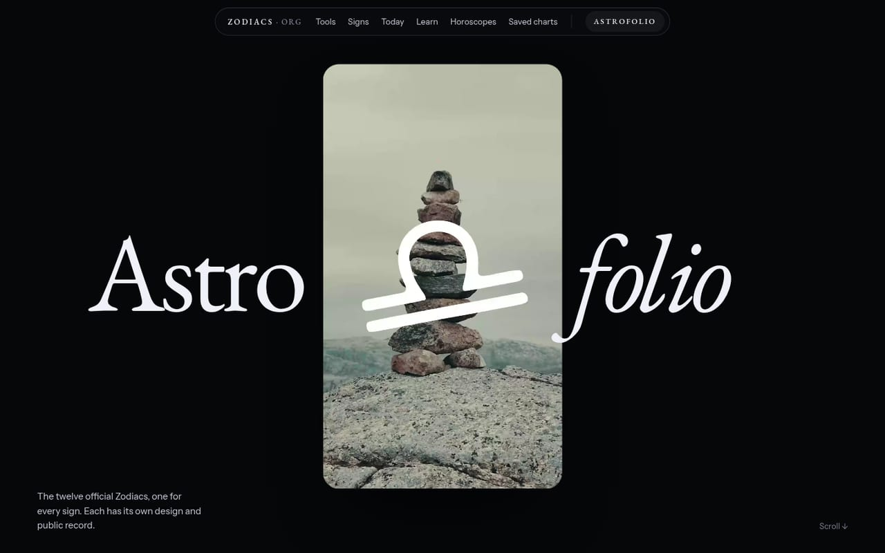
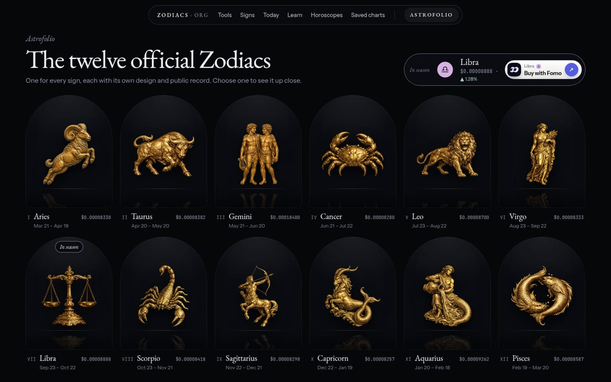
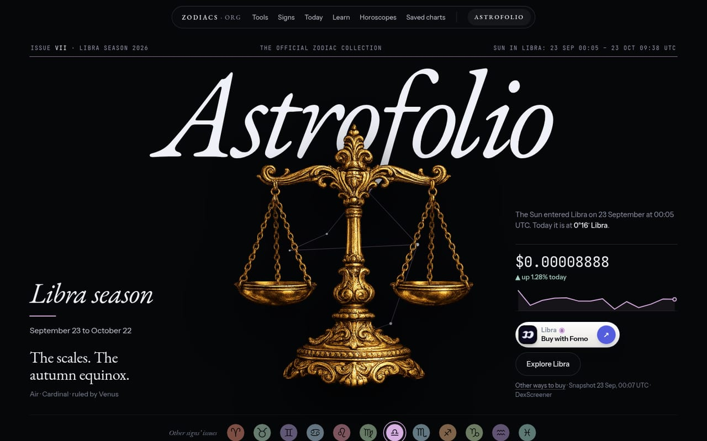
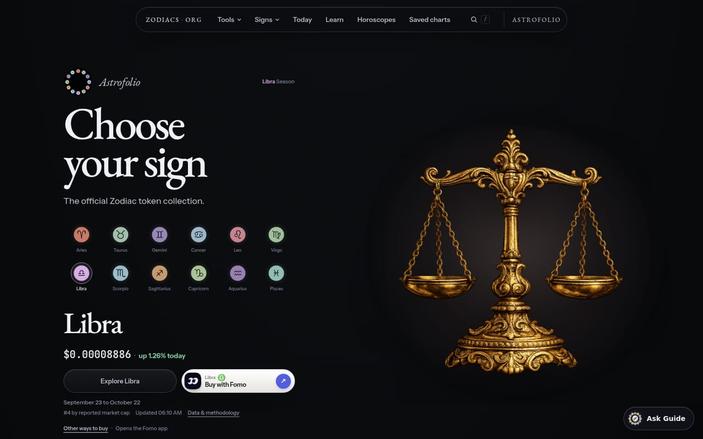

Astrofolio redesign
Four directions for /astrofolio/
Each prototype uses only assets already in the repository: the twelve gold figures, the ring identity, the constellation maps, the films, the merch, and the material from /fomo/. Prices, addresses and dates are real: the public Registry, the committed DexScreener snapshot, and the Sun’s ingress times.

The Astrofolio ring becomes the sign picker: a real ecliptic dial that turns until your sign reaches the top, with a marker at the Sun’s actual position.
Open the prototype →
A collection launch. The glyph film from /fomo/ sits inside the wordmark and opens to full screen; the twelve follow on a sideways runway; fomo is the store.
Open the prototype →
All twelve at once, each in a lit arched niche like a gallery wall. Any one opens into a full-screen object view with its label, price and provenance.
Open the prototype →
A magazine cover that re-issues itself every zodiac season, with the season’s figure standing in front of the masthead and every other sign’s issue one tap away.
Open the prototype →
For comparison
The live page today: a two-column hero with one figure at a time, followed by a stack of similar dark cards. The ring identity appears only as a 52px lockup, and none of the footage is used.
Add ?sign=scorpio to any prototype to open it on another sign. The write-up is in README.md beside this page.
Prototypes only; nothing here is imported by the site build. Serve the repository root (python3 -m http.server 8000) and open /docs/design/astrofolio-redesign/.